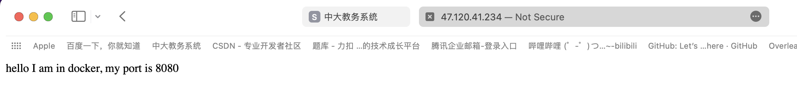

镜像仓库实战练习
实战一：搭建一个Nginx服务
基础知识
有关于Nginx的相关基础知识，可见博客。
找一个合适的Nginx镜像然后拉取下来
直接上dockerhub找，要找一些认证过的，安全漏洞少的。
docker pull nginx:1.24.0查看这个镜像的信息
[ { "Id": "sha256:bf09be6b0005cc81d4cc3c3cf836c84450e92a7c4dcb2e2e31d84843ff3d6c62", "RepoTags": [ "nginx:1.24.0" ], "RepoDigests": [ "nginx@sha256:a195f9fb6503531660b25f9aeefef1f48bbaf56f46da04bffe1568abb3d3aff6" ], "Parent": "", "Comment": "", "Created": "2023-08-16T09:51:35.963457884Z", "Container": "21c5e07cc340501c06b6c9c9ddecb109f73df89abb5a9e5b5d0446a93bce5787", "ContainerConfig": { "Hostname": "21c5e07cc340", "Domainname": "", "User": "", "AttachStdin": false, "AttachStdout": false, "AttachStderr": false, "ExposedPorts": { "80/tcp": {} }, "Tty": false, "OpenStdin": false, "StdinOnce": false, "Env": [ "PATH=/usr/local/sbin:/usr/local/bin:/usr/sbin:/usr/bin:/sbin:/bin", "NGINX_VERSION=1.24.0", "NJS_VERSION=0.7.12", "PKG_RELEASE=1~bullseye" ], "Cmd": [ "/bin/sh", "-c", "#(nop) ", "CMD [\"nginx\" \"-g\" \"daemon off;\"]" ], "Image": "sha256:7dcbca41c4e2332943388468e49bb0dfb817a7968701009888e6de8bfc507448", "Volumes": null, "WorkingDir": "", "Entrypoint": [ "/docker-entrypoint.sh" ], "OnBuild": null, "Labels": { "maintainer": "NGINX Docker Maintainers <docker-maint@nginx.com>" }, "StopSignal": "SIGQUIT" }, "DockerVersion": "20.10.23", "Author": "", "Config": { "Hostname": "", "Domainname": "", "User": "", "AttachStdin": false, "AttachStdout": false, "AttachStderr": false, "ExposedPorts": { "80/tcp": {} }, "Tty": false, "OpenStdin": false, "StdinOnce": false, "Env": [ "PATH=/usr/local/sbin:/usr/local/bin:/usr/sbin:/usr/bin:/sbin:/bin", "NGINX_VERSION=1.24.0", "NJS_VERSION=0.7.12", "PKG_RELEASE=1~bullseye" ], "Cmd": [ "nginx", "-g", "daemon off;" ], "Image": "sha256:7dcbca41c4e2332943388468e49bb0dfb817a7968701009888e6de8bfc507448", "Volumes": null, "WorkingDir": "", "Entrypoint": [ "/docker-entrypoint.sh" ], "OnBuild": null, "Labels": { "maintainer": "NGINX Docker Maintainers <docker-maint@nginx.com>" }, "StopSignal": "SIGQUIT" }, "Architecture": "amd64", "Os": "linux", "Size": 142203809, "VirtualSize": 142203809, "GraphDriver": { "Data": { "LowerDir": "/data/var/lib/docker/overlay2/802175726a26b553dd520ef1f37e8ef3119a87313ef7225f5e99ffb536b8734c/diff:/data/var/lib/docker/overlay2/18c96ba08189c46e2ec2d72be86e567ecd1aa6e6015676f99a6b34f8dd987414/diff:/data/var/lib/docker/overlay2/e0f5488f47fe33bc1635d81a05d7e270254f514c5f23bf53a9e4c816465e3655/diff:/data/var/lib/docker/overlay2/fba5c6dd16cfa7554b01cae639acb517f5a2d8150a3ee9fbea84ef542b8276b1/diff:/data/var/lib/docker/overlay2/09ed26d778b566d2df261bfd2e0b2a7e1db9ed9fb1cec5b37a6615842a141464/diff", "MergedDir": "/data/var/lib/docker/overlay2/8bddb1b07abd085e515d66c03a4ac356e5e79377eadcccf4aac49efddd7a39ae/merged", "UpperDir": "/data/var/lib/docker/overlay2/8bddb1b07abd085e515d66c03a4ac356e5e79377eadcccf4aac49efddd7a39ae/diff", "WorkDir": "/data/var/lib/docker/overlay2/8bddb1b07abd085e515d66c03a4ac356e5e79377eadcccf4aac49efddd7a39ae/work" }, "Name": "overlay2" }, "RootFS": { "Type": "layers", "Layers": [ "sha256:63290f9c9e5201f0507ee1b5701aa06c7f48bef7cce287fc77db92bec634d737", "sha256:4c3723958fdba7a3be12c56c73d6f35c5da6ff9f6feecddc0bb6b128900f3dc9", "sha256:25f78b8b81b403911798779f4197d78cf49e3064fa093ae6519f1bc2349d3d22", "sha256:9cf681134567fd7bf900d01121e321fa9be8e53744fd127e2cea827e49d4888b", "sha256:d635f1cc38f9a833d96e67b6044bb054bf1585404bba1022db4bc3e38e7f2922", "sha256:451dfbce0e08ae65bc6421917afa07e5c85633ffb278ce66620311739ea415d6" ] }, "Metadata": { "LastTagTime": "0001-01-01T00:00:00Z" } }]通过这些详细信息，我们可以知道启动命令，端口号等信息。
启动这个镜像并修改首页
docker run -p 8080:80 --name myweb1 -h myweb1.com -e myenv=test nginx:1.24.0对外暴露8080这个端口。
外面通过8080端口已经可以访问了。
注意：如果使用的是云服务器，要注意开放云服务器的防火墙。
在这里服务端也可以看到访问的日志打印。
当然，这里是前台运行，如果我们终端终止了，服务就停了。
所以我们要放到后台运行。
带上-d选项后台运行。
docker run -p 8080:80 --name myweb1 -h myweb1.com -e myenv=test -d nginx:1.24.0但是这样没有交互，我们改不了首页。所以我们要用交互的方式重新打开。

实战二：Docker hub上创建自己私有仓库
基础知识
BusyBox
BusyBox 是一个集成了三百多个最常用 Linux 命令和工具的软件。BusyBox 包含了一 些简单的工具，例如 ls、cat 和 echo 等等，还包含了一些更大、更复杂的工具，例 grep、find、mount 以及 telnet。有些人将 BusyBox 称为 Linux 工具里的瑞士军刀。 简单的说 BusyBox 就好像是个大工具箱，它集成压缩了 Linux 的许多工具和命令，也 包含了 Linux 系统的自带的 shell。busybox 是一个集成了一百多个最常用 linux 命令和 工具的软件,他甚至还集成了一个 http 服务器和一个 telnet 服务器,而所有这一切功能却 只有区区 1M 左右的大小.因海外带宽较小，我们拉取该镜像推送到自己的仓库。
下载busybox
wget https://busybox.net/downloads/binaries/1.28.1-defconfig-multiarch/busybox-x86_64 --no-check-certificate如图所示，busybox支持非常多的命令。

docker hub上创建自己的私有仓库
拉取busybox镜像并推送到自己的仓库中
现在其实我们的仓库里面是没有镜像的，所以我们先拉一个busybox镜像到本地先。
docker pull busybox:1.36.0然后登录。
docker login打标签。
docker tag busybox:1.36.0 yufcbagpack/busybox-by-yufc:v1.0push上去。
xxxxxxxxxxdocker push yufcbagpack/busybox-by-yufc:v1.0此时已经上去了。
实战三：腾讯云创建自己的私有仓库
网址：
如何在工作中选取我们需要的基础镜像
我入职了一个公司，开发一个镜像，我怎么选择用哪个作为基础镜像啊?
一般大型公司有自己专门的镜像制作组织，他们会选取对应的系统版本作为基础镜 像，例如华为某部门选取欧拉来制作基础镜像，腾讯选择自己的 TLinux 制作基础镜像， 不会因为出现 CentOS 不维护了无法使用的情况，而且这些镜像一般都会经过严格的 安全扫描，然后作为基础组件提供给各个部门。一般的公司往往也会同意镜像的基础 版本，所以这个选择个人一般不用太多纠结。